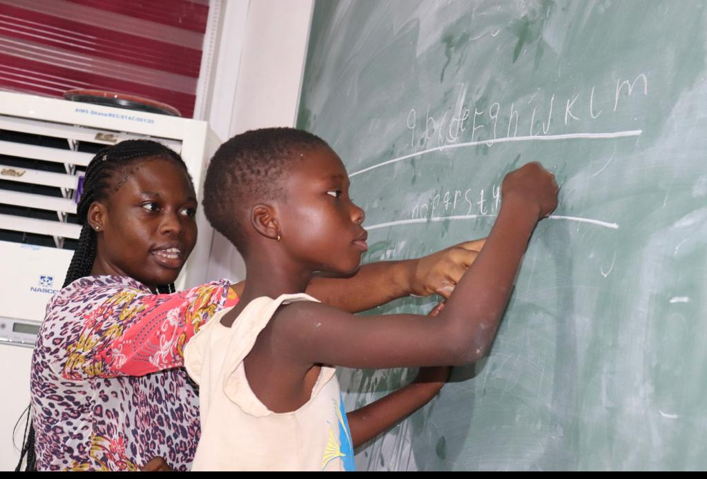

OUTREACH AND VOLUNTEERING
Your Greatness Is Not What You Have, It’s What You Give.

Mentoring younger ones in STEM.
I had the honor of having the MasterCard Foundation fully fund my master's degree at AIMS-GHANA. We had the opportunity to contribute back to the community as MasterCard Foundation scholars. Therefore, together with other scholars, we took part in five give-back project activities for underserved communities. We organized a three-day free Math, Science, and Technology program with the kids in the neighborhood around our school as a way of giving back. I have to admit that the kids' enthusiasm and involvement were overwhelming.
We educated the primary school students on Information Communication Technology (I.C.T) as well as simple methods for solving their basic math problems. For the junior high school students, we introduced basic Python lessons. At the end of the teaching, we had some educationally entertaining games. Since we used to assist them with their homework and explain things to them in the simplest terms possible, the students were disappointed when the teaching program came to an end. Since these younger students had high expectations and give their all whenever we educate them, it was tough for me to also leave the teaching program. That alone inspired me to do more for them, but alas, we had to focus on other charitable endeavors for the community. I'm happy we made such a move and will always be eager to assist the next generation.
Donation to Teshie Children's Home.
 The Teshie Children's Home provides a safe haven for orphans and disadvantaged kids who would otherwise end up on the streets. Over the years, the Teshie Children's Home has provided free education for their children, vocational training to teenage mothers, and assistance to elderly people in integrating more into society so that they are not mentally burdened by the adoption of additional home responsibilities.
The Teshie Children's Home provides a safe haven for orphans and disadvantaged kids who would otherwise end up on the streets. Over the years, the Teshie Children's Home has provided free education for their children, vocational training to teenage mothers, and assistance to elderly people in integrating more into society so that they are not mentally burdened by the adoption of additional home responsibilities.
As part of my volunteer work, I recruited my fellow July-born coworkers to join a group called JULY IS US, in which we decided to make a donation to the society every year at the end of July. We made a donation to the Teshie Children's Home on July 26, 2022, with the slogan "EVERY HEART MATTERS". When we arrived at the children's home, the kids were overjoyed to see us and assisted us in unpacking the items we brought. The owner (Mrs Parker) of the orphanage home was subsequently approached, and we explained our goal to her. She appreciated our effort and kind heart to support the orphans. Afterwards, we handed the items we had brought and took pictures with everyone after giving the kids some guidance. I was overwhelmed with emotion by these kids smiles. We then thanked the officials of the children's home for welcoming us and taking good care of our future leaders. We have optimism for the future of these kids and are optimistic that persistently advocating for change in orphanages will contribute to their improved treatment and skills to achieve in society. Donations of food, toiletries, and money are also welcome to aid with the kids maintenance.
.jpeg)